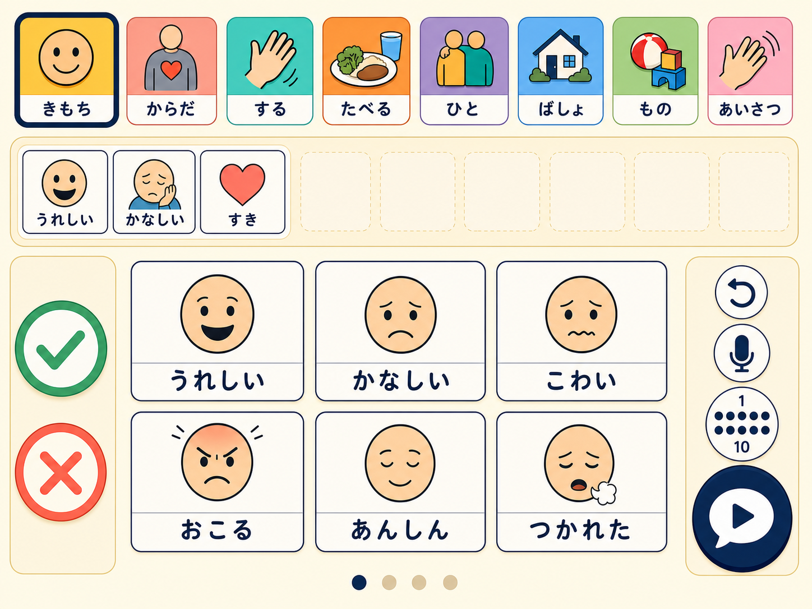
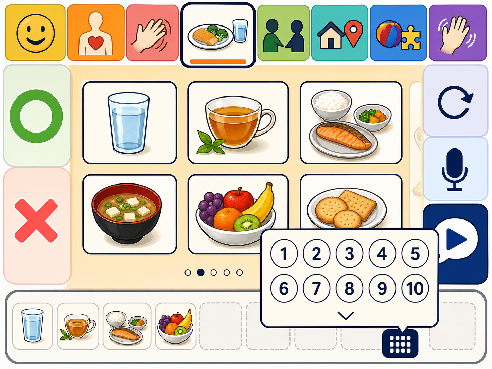
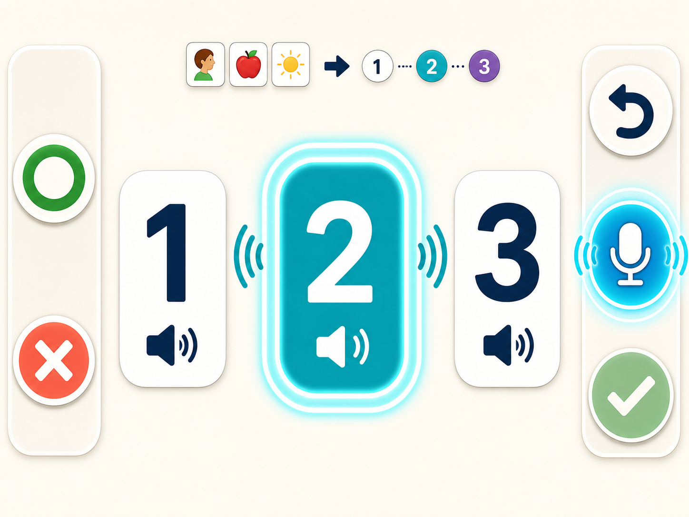

意味の違う3候補
選んだ絵から、意図の異なる短い文章を3つ提案します。
えらんだ絵が、じぶんのことばになる。
話すことや文字の読み書きがむずかしい方のための会話補助アプリ。絵カードからAIが文章を提案し、聞いて番号で選んだことばを読み上げます。
ベータ版を試してみる →
Features
選んだ絵から、意図の異なる短い文章を3つ提案します。
相手の問いかけを端末内で聞き取り、文脈に合う候補を作ります。
身近な人や物の写真と読み上げ語を登録して語彙を増やせます。
How to use
気持ち、からだ、行動などから伝えたい絵をタップ。
AIが作った3つの文章を順番に読み上げます。
自分の意図に近い番号を選び、相手へ読み上げます。
掲載画面はベータ版のUIです。アカウント不要で、記録とマイク音声は端末の外へ出しません。
Beta screens



ご本人、ご家族、支援者の方からのご連絡をお待ちしています。
参加希望をメールする →